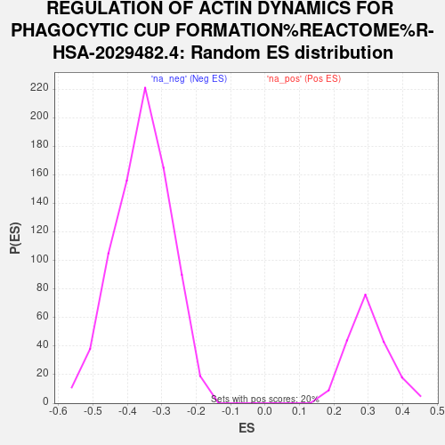

Profile of the Running ES Score & Positions of GeneSet Members on the Rank Ordered List
| Dataset | gene_ranks |
| Phenotype | NoPhenotypeAvailable |
| Upregulated in class | na_neg |
| GeneSet | REGULATION OF ACTIN DYNAMICS FOR PHAGOCYTIC CUP FORMATION%REACTOME%R-HSA-2029482.4 |
| Enrichment Score (ES) | -0.6143445 |
| Normalized Enrichment Score (NES) | -1.7165271 |
| Nominal p-value | 0.0 |
| FDR q-value | 0.21078958 |
| FWER p-Value | 0.965 |
| SYMBOL | RANK IN GENE LIST | RANK METRIC SCORE | RUNNING ES | CORE ENRICHMENT | |
|---|---|---|---|---|---|
| 1 | DOCK1 | 1039 | 1.667 | -0.0349 | No |
| 2 | VAV3 | 2836 | 0.661 | -0.1282 | No |
| 3 | IGLC2 | 3209 | 0.564 | -0.1412 | No |
| 4 | WIPF3 | 3436 | 0.513 | -0.1466 | No |
| 5 | ARPC3 | 4511 | 0.297 | -0.2038 | No |
| 6 | CDC42 | 4780 | 0.254 | -0.2155 | No |
| 7 | ARPC5 | 5021 | 0.216 | -0.2260 | No |
| 8 | NCKAP1 | 5270 | 0.180 | -0.2376 | No |
| 9 | WASF1 | 5903 | 0.095 | -0.2725 | No |
| 10 | ELMO1 | 6244 | 0.052 | -0.2913 | No |
| 11 | WAS | 6468 | 0.026 | -0.3037 | No |
| 12 | VAV2 | 6532 | 0.020 | -0.3070 | No |
| 13 | ABI2 | 7513 | -0.034 | -0.3628 | No |
| 14 | MAPK1 | 7785 | -0.065 | -0.3774 | No |
| 15 | PTK2 | 7981 | -0.088 | -0.3873 | No |
| 16 | ACTR3 | 8110 | -0.103 | -0.3931 | No |
| 17 | ABI1 | 8209 | -0.116 | -0.3970 | No |
| 18 | ACTR2 | 8524 | -0.155 | -0.4127 | No |
| 19 | HSP90AA1 | 10146 | -0.384 | -0.5001 | No |
| 20 | SYK | 10236 | -0.399 | -0.4993 | No |
| 21 | BRK1 | 10257 | -0.404 | -0.4945 | No |
| 22 | NCK1 | 11321 | -0.590 | -0.5468 | No |
| 23 | WIPF2 | 11976 | -0.734 | -0.5734 | No |
| 24 | ARPC2 | 12098 | -0.762 | -0.5690 | No |
| 25 | MYH2 | 12139 | -0.773 | -0.5598 | No |
| 26 | CRK | 12722 | -0.930 | -0.5794 | No |
| 27 | WASL | 12848 | -0.963 | -0.5723 | No |
| 28 | PAK1 | 13581 | -1.178 | -0.5968 | Yes |
| 29 | ARPC4 | 13585 | -1.179 | -0.5795 | Yes |
| 30 | ABL1 | 13743 | -1.226 | -0.5703 | Yes |
| 31 | ELMO2 | 13749 | -1.228 | -0.5523 | Yes |
| 32 | ARPC1A | 13921 | -1.283 | -0.5431 | Yes |
| 33 | HSP90AB1 | 14173 | -1.377 | -0.5370 | Yes |
| 34 | RAC1 | 14403 | -1.463 | -0.5284 | Yes |
| 35 | CYFIP1 | 14413 | -1.468 | -0.5071 | Yes |
| 36 | MAPK3 | 14645 | -1.585 | -0.4968 | Yes |
| 37 | CYFIP2 | 15233 | -1.904 | -0.5022 | Yes |
| 38 | WASF2 | 15257 | -1.921 | -0.4750 | Yes |
| 39 | ARPC1B | 15405 | -2.013 | -0.4535 | Yes |
| 40 | LIMK1 | 15644 | -2.163 | -0.4350 | Yes |
| 41 | MYO10 | 15833 | -2.288 | -0.4118 | Yes |
| 42 | ACTG1 | 16018 | -2.434 | -0.3862 | Yes |
| 43 | MYO9B | 16105 | -2.512 | -0.3538 | Yes |
| 44 | MYH9 | 16270 | -2.648 | -0.3239 | Yes |
| 45 | NF2 | 16441 | -2.860 | -0.2911 | Yes |
| 46 | MYO5A | 16482 | -2.919 | -0.2500 | Yes |
| 47 | CFL1 | 16582 | -3.046 | -0.2105 | Yes |
| 48 | MYO1C | 16642 | -3.135 | -0.1672 | Yes |
| 49 | WIPF1 | 16690 | -3.212 | -0.1222 | Yes |
| 50 | NCKIPSD | 16783 | -3.356 | -0.0776 | Yes |
| 51 | ACTB | 16901 | -3.585 | -0.0310 | Yes |
| 52 | BAIAP2 | 17116 | -4.247 | 0.0198 | Yes |
